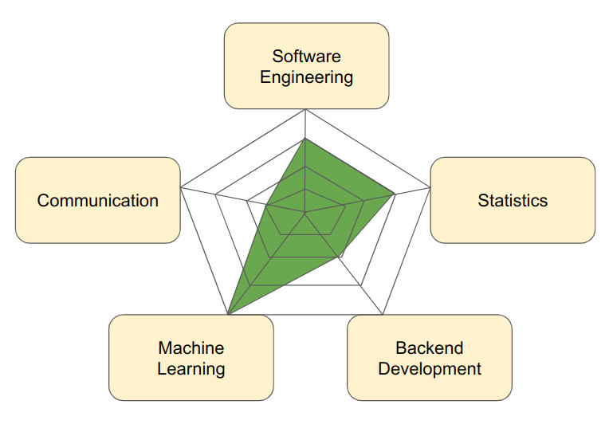

Data ... Detective?
We at Data Detectives are all about democratizing data-driven decisioning. Ever compared brands at the grocery store and bought the best one for your preferences? That's a data-driven decision. Or, ever thought about what clothes you wanted to wear that day and had to take into account weather, who you'd see, and what you were doing? That's a data-driven decision. We make hundreds of these kinds of decisions a day, and though the examples provided may feel a bit inconsequential (or maybe not!), there are certainly very consequential decisions that require the best data to do right. Having the ability to think about this process, even if you're not programming, is crucial not only in industry, but also in everyday life, and it certainly permeates every area of life.
This is why we prefer the term data detective, because we think it gets at the core of what we're trying to teach and train people to do here. We're not just concerned with what data we need to answer a question or solve a problem, but with the data generating process that created that data in the first place. Let's take our example of choosing a brand at the grocery store. One factor we can consider is price. But, when we dig a little deeper, we start to understand why certain brands charge certain prices. Perhaps smaller, local brands cost more money, but we want to be able to support our local community. Perhaps unethical production practices lower the price, but we'd prefer not to support that kind of manufacturing. Perhaps a mismanagement of inventory caused a steep discount that we should definitely take advantage of. Doing the detective work to understand data generating processes ultimately makes us better data-driven decision makers, and we believe that anyone can be a data detective, because we can all learn to ask and answer questions.
Fundamentally, this is a platform for learning, and we believe that a good data detective is one that is always learning. The field is broad, and has gone by many different names that highlight what we believe to be parts of it—data science, machine learning, decision science, causal inference, statistics, experimentation—you get the point. It's also a fast-paced industry, with major advancements coming faster than we can reasonably keep up. But, we fundamentally believe that the best data-driven decisioners, the best data detectives, are not those that know every algorithm in the book, but those that have a broad set of core competencies, a few specialties, and the information needed to fill any gap in between, when the situation calls for it.
For example, we believe that a good data detective needs at least a level 1 understanding in the various core competencies listed here: 
But also presented here is a data detective who specializes in machine learning, and can really solve a lot of problems that require that kind of expertise. And hopefully any other problem that comes our data detectives' way can be solved by leveling up the other areas through the various tutorials and lessons on our platform.
Therefore, to support aspiring data detectives, we are designing this curriculum, which is a mix of free, online knowledge articles, and paid playgrounds and in-person classes. Our knowledge articles will always be free, because we firmly believe in democratizing data-driven decisioning. If you want to learn, you can do so freely. In each of our "lessons" we present the material at different levels; start at level 1 and move on to become an expert in the topic covered. However, if you want to engage with our trained data detectives, if you want to practice your skills with our carefully designed and curated playgrounds, if you want to have fun practicing your skills in a live workshop, those are available as well. We hope that our explanation will be clear enough to learn from, but also acknowledge that practice makes perfect. Hope you enjoy, and find that, in your data-driven decisioning, the value added from our add-ons are worth it.